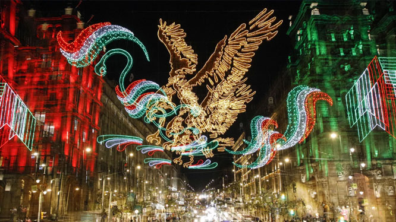

Mes Patrio

El Mes Patrio en México es el mes de septiembre, un periodo dedicado a conmemorar los acontecimientos históricos más relevantes en la lucha por la libertad y la soberanía del país, transformándose en una fiesta nacional llena de identidad, cultura y tradiciones.
En el año de 1845, el presidente Antonio López de Santa Anna celebro oficialmente la ‘Ceremonia del Grito’ para recordar al cura Hidalgo y a los héroes que lucharon por la independencia. Estableció que la ceremonia se realizara cada 15 de septiembre a las 23:00 horas. A su vez poder festejar su cumpleaños número 80.El 16 de Septiembre de 1910 fue oficialmente inaugurado el “Ángel de la Independencia” Obra del Arquitecto Antonio Rivas.
